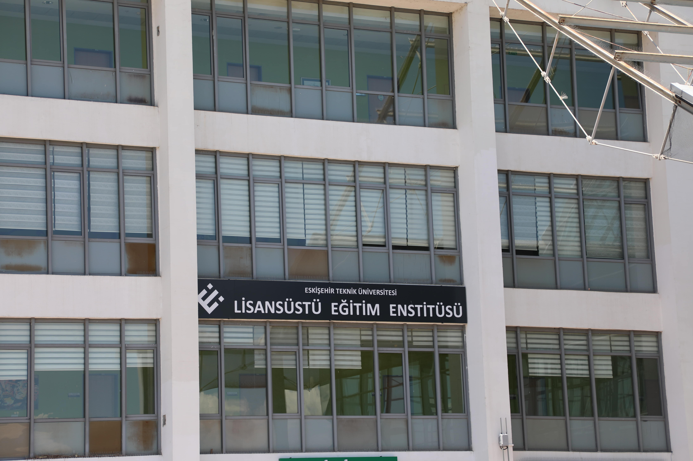
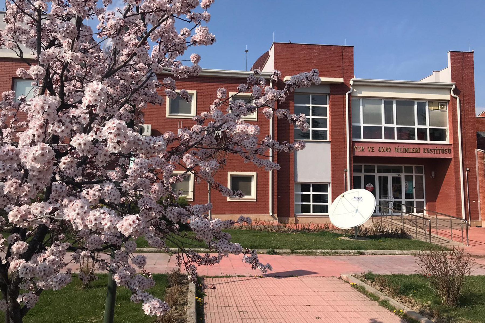

FACULTIES
faculty of Science
Eskişehir Technical University Faculty of Science has adopted the vision of being a pioneering faculty that produces basic information that will be the key to scientific innovations and provides education to the society by using all kinds of media. Faculty of Science; In addition to Physics, Chemistry and Biology, he gives education in the fields of Mathematics, which is the language of nature, and Statistics, which is the science of interpreting natural social science data using appropriate methods. Education in the faculty is carried out by making use of laboratory facilities equipped with advanced technology. Students also take vocational elective courses and social elective courses; thus, they are trained as individuals who are versatile, researcher qualified, self-confident and equipped with contemporary knowledge. The aim of the Faculty of Science is in laboratories and classrooms equipped with advanced technology; It trains rational, self-confident, questioning and researcher graduates in the fields of biology, physics, statistics, chemistry and mathematics. At least 30% of the courses are taught in English in the Statistics and Chemistry Departments of the faculty and there is a compulsory English Preparatory Class in these departments. In the Biology, Physics and Mathematics Departments, the English Preparatory Class is optional and lasts for one year. All departments of the faculty have been accredited by FEDEK for the second time for 5 years until September 30, 2023. The Faculty also has International Joint Undergraduate Programs (paid) run by the Biology and Chemistry Departments together with the Biology and Chemistry Departments of the State University of New York at Albany in the United States, and the language of instruction of these programs is English. There is an English Preparatory Class for these programs as well. Faculty of Science is affiliated to Eskişehir Technical University, which was established with the Law No. 7141 published in the Official Gazette dated May 18, 2018 and numbered 30425.
Architecture and Design Faculty
Faculty of Architecture and Design was separated from Anadolu University and included in Eskişehir Technical
University, which was established with the Law No. 7141 published in the Official Gazette dated
May 18, 2018 and numbered 30525. In the Faculty of Architecture and Design,
there are Department of Architecture, Department of Interior Architecture, Department of Industrial Design and Department of Fashion
and Textile Design.
Our faculty, which has a practice-oriented educational approach, has computer laboratories,
workshops and design studios with up-to-date software applications. Our faculty aims to raise individuals
who can develop professional relationships, are open to interdisciplinary practice,
and design by supporting creativity with knowledge, current technologies and aesthetic
understanding. In the education and training process, theoretical courses, workshops, exhibitions,
fashion shows, seminars, conferences, research studies and study tours are considered as a whole in terms of education.
Numerous research and development projects supported by TUBITAK, University Scientific Research Fund and various industrial
organizations are carried out in our departments. Within the framework of University-Industry Cooperation, students produce
joint projects with private sector companies and are encouraged to participate in national/international
competitions organized by organizations. In this direction, many students won national/international competitions.
Our faculty has agreements with many universities within the scope of ERASMUS, MEVLANA and FARABI programs and these
opportunities are used extensively by our students. There is an optional English Preparatory Program in the departments of
the faculty, and students are given the opportunity to learn a foreign language.
INSTITUTES
Graduate School of Education
Graduate School of Education/Eskisehir Technical University
Graduate School of Education; It provides education in 31 Departments and 1 Department of Art.
There are 24 Doctorate Programs, 32 Master's Programs and 5 Distance Education Non-Thesis Master's Programs.
ESTU-LEE demonstrates its quality in Postgraduate Education and its difference in internationalization,
with a total of 242 foreign students, 64 women and 178 men, from 50 countries in 3 years.
Earth and Space Sciences Institute
Earth and Space Sciences Institute/Eskisehir Technical University
Lessons :
Earth Sciences
Theoretical Soil Mechanics Soil Models
Introduction to Earthquake Engineering
System Identification and Structural Health Monitoring
Seismology
Institute of Transportation Sciences
The Transportation Economics Research Institute was established within Anadolu University in 1993 with the Decree Law No. 496, affiliated to the Rectorate. Changing the name of the Transportation Economics Research Institute to “Transportation Sciences Institute” was decided by the Council of Ministers on 4/10/2012 and entered into force after being published in the Official Gazette dated 02 November 2012 and numbered 28455. The Institute of Transportation Sciences is the first and only institute in its field.
VOCATİONAL HIGHER SCHOOL
Porsuk Vocational Higher School
About
The main purpose of our school is to meet the qualified workforce needs of the sector. Aiming to train our students as well-equipped, rational, questioning, analytical thinking and crisis-solving, responsible individuals, our School aims to provide an educational service to help them gain skills appropriate to the requirements of the information age and business life.
Currently in our School;
- Printing and Publishing Technologies,
- Computer programming,
- Electricity Generation, Transmission and Distribution,
- Graphic design,
- Unmanned Aerial Vehicle Technology and Operation
- Machinery Drawing and Construction,
- Radio and Television Technology
- mechatronics,
- Building Inspection
Education and training services are provided in a total of 9 programs.
Transportation Vocational Higher School
Eskişehir Technical University Transportation Vocational School, in the 2012-2013 academic year,
Rail Systems Electric and Electronic Technology, Rail Systems Management, Rail Systems Machinery Technology,
Rail Systems Machining, Rail Systems Road Technology, Transportation and Traffic, which is within
Anadolu University Porsuk Vocational School. Services, with Aircraft Technology programs; Civil Aviation
Cabin Services within Anadolu University Eskişehir Vocational School started education and training activities
in 9 programs by incorporating Logistics Programs.
ESKİŞEHİR TECHNICAL UNIVERSITY was established by separating some units
from Anadolu University with the "Law on the Amendment of Higher Education Law and some
laws and statutory decrees" numbered 7141, which was published in the Official Gazette dated
18 May 2018 and numbered 30425 and entered into force. Vocational School of Transportation started
to continue its education and training activities within the body of Eskişehir Technical University.
Transportation related associate degree programs within Eskişehir Technical University
Transportation Vocational School, "Rail Systems Electric-Electronic Technology", "Rail Systems Machinery Technology",
"Rail Systems Management", "Rail Systems Road Technology" and "Transportation and Traffic Services Programs" "
In the 2001-2002 academic year; "Rail Systems Machining Program" and Logistics Program in the 2009-2010 academic
year Aircraft Technology and Civil Aviation Cabin Services Program" started education in the 2010-2011 academic year.
All Programs within Eskişehir Technical University Transportation Vocational School are included
in the Transportation Services Basic Area within the scope of the Turkish Higher Education Qualifications
Framework (TYYÇ) in the Bologna Process.